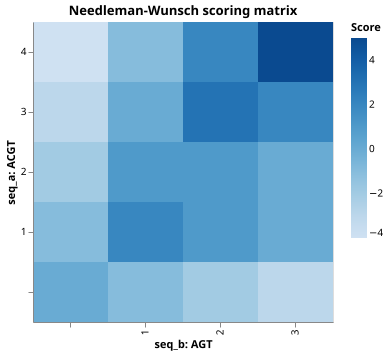

Pairwise Sequence Alignment
9.1 The Problem
- Two DNA sequences often share regions of similarity because they evolved from a common ancestor or perform a similar function
- Identifying those shared regions by eye is impractical for sequences longer than a few dozen characters
- Global alignment finds the best end-to-end correspondence between two sequences, inserting gap characters (
-) wherever a character in one sequence has no counterpart in the other - A gap corresponds to an insertion or deletion event during evolution
- Before building the full algorithm, it helps to see a simpler problem with the same structure: computing the minimum number of single-character edits needed to turn one string into another
9.2 A Warm-Up: Edit Distance
- The edit distance between two strings is the minimum number of insertions, deletions, or substitutions needed to transform one into the other
- Define \(d(i,j)\) as the edit distance between the first \(i\) characters of string \(a\) and the first \(j\) characters of string \(b\)
- The recurrence is:
\[d(i,j) = \min\!\begin{cases} d(i-1,\,j-1) & \text{if } a_i = b_j \quad\text{(characters match, no cost)} \\ d(i-1,\,j-1) + 1 & \text{if } a_i \neq b_j \quad\text{(substitute)} \\ d(i-1,\,j) + 1 & \text{(delete from } a \text{)} \\ d(i,\,j-1) + 1 & \text{(insert into } a \text{)} \end{cases}\]
- The boundary conditions are \(d(i,0) = i\) (delete all of \(a\)’s prefix) and \(d(0,j) = j\) (insert all of \(b\)’s prefix)
- This is dynamic programming: every subproblem is solved once and stored, so the total work is \(O(mn)\) rather than the exponential cost of trying all possible alignments
Why is \(d(i,0) = i\) in the edit distance recurrence, rather than \(d(i,0) = 0\)?
- Because the first \(i\) characters of \(a\) have already been aligned perfectly
- Wrong: \(d(i,0)\) represents aligning \(a[1..i]\) against an empty string, which requires \(i\) deletions, not zero.
- Because you need \(i\) deletions to transform \(a[1..i]\) into the empty string
- Correct: each of the \(i\) characters in the prefix must be removed, costing one unit per character.
- Because each character in \(a\) must be substituted for a gap
- Wrong: substitution replaces one character with another; removing a character is a deletion, not a substitution.
- Because the minimum edit distance is always equal to the longer sequence’s length
- Wrong: if both sequences are identical the edit distance is zero, regardless of length.
9.3 Scoring an Alignment
- Global alignment assigns a score to each aligned pair of positions rather than a uniform cost:
- Matching characters contribute a positive reward
- Mismatched characters contribute a small penalty
- Each gap character contributes a penalty
MATCH_SCORE = 2 # reward for aligning identical characters
MISMATCH_PENALTY = -1 # penalty for aligning different characters
GAP_PENALTY = -1 # penalty per gap character inserted in either sequence
# Example sequences for the lesson.
SEQ_A = "ACGT"
SEQ_B = "AGT"MATCH_SCORE> 0 rewards exact matchesMISMATCH_PENALTYandGAP_PENALTYare both negative and equal here- Every non-match costs one unit regardless of whether it is a substitution or an insertion/deletion
- Setting
GAP_PENALTYequal toMISMATCH_PENALTYis the simplest possible scoring scheme- More elaborate aligners use larger gap-open penalties to discourage fragmented alignments
9.4 The Needleman-Wunsch Algorithm
- Needleman-Wunsch solves global alignment exactly using dynamic programming
- Build a matrix \(H\) of size \((m+1)\times(n+1)\) where \(m\) and \(n\) are the sequence lengths
- Initialize the border: \(H[i,0] = i \times \text{gap}\) and \(H[0,j] = j \times \text{gap}\) to represent aligning a prefix of one sequence against an empty string
- Fill \(H\) left-to-right, top-to-bottom using the recurrence:
\[H(i,j) = \max\!\begin{cases} H(i-1,\,j-1) + s(a_i,\,b_j) & \text{(match or mismatch)} \\ H(i-1,\,j) + g & \text{(gap in } b \text{)} \\ H(i,\,j-1) + g & \text{(gap in } a \text{)} \end{cases}\]
- \(s(a_i, b_j)\) is
MATCH_SCOREorMISMATCH_PENALTYand \(g\) isGAP_PENALTY - There is no zero floor: unlike local alignment, global alignment must account for every character in both sequences, so negative scores are allowed
- The final score of the best global alignment is \(H[m, n]\).
def _nt_score(a, b):
"""Return match score or mismatch penalty for two nucleotide characters."""
return MATCH_SCORE if a == b else MISMATCH_PENALTYdef fill_matrix(seq_a, seq_b):
"""Return the Needleman-Wunsch scoring matrix for two sequences.
The matrix has shape (len(seq_a)+1, len(seq_b)+1). Entry H[i, j] holds
the score of the best global alignment of seq_a[:i] with seq_b[:j].
The first row and column are initialised to cumulative gap penalties to
represent aligning a non-empty prefix with an empty string.
"""
m, n = len(seq_a), len(seq_b)
H = np.zeros((m + 1, n + 1), dtype=int)
for i in range(m + 1):
H[i, 0] = i * GAP_PENALTY
for j in range(n + 1):
H[0, j] = j * GAP_PENALTY
for i in range(1, m + 1):
for j in range(1, n + 1):
diag = H[i - 1, j - 1] + _nt_score(seq_a[i - 1], seq_b[j - 1])
delete = H[i - 1, j] + GAP_PENALTY # gap in seq_b
insert = H[i, j - 1] + GAP_PENALTY # gap in seq_a
H[i, j] = max(diag, delete, insert)
return HNeedleman-Wunsch does NOT include a max(0, ...) floor in its recurrence. What is the consequence?
- Negative cells are discarded, making the algorithm run faster
- Wrong: there is no discarding; every cell is filled and may hold a negative value.
- The algorithm can produce alignments whose total score is negative
- Correct: a global alignment must span both sequences end to end, so if the sequences share few matches the total score can be negative.
- The alignment always starts and ends at the same position in both sequences
- Wrong: this describes a property of global alignment (both sequences are fully consumed) but is not a direct consequence of removing the zero floor.
- Mismatches are penalised more heavily than gaps
-
Wrong: the relative penalties are set by
MISMATCH_PENALTYandGAP_PENALTY, not by the presence or absence of a zero floor.
9.5 An Example DP Table
- Aligning
SEQ_A = "ACGT"withSEQ_B = "AGT"usingMATCH_SCORE = 2,MISMATCH_PENALTY = -1,GAP_PENALTY = -1:
| A | G | T | ||
|---|---|---|---|---|
| 0 | -1 | -2 | -3 | |
| A | -1 | 2 | 1 | 0 |
| C | -2 | 1 | 1 | 0 |
| G | -3 | 0 | 3 | 2 |
| T | -4 | -1 | 2 | 5 |
- Row labels (left) are characters of
SEQ_A; column labels (top) are characters ofSEQ_B - \(H[1,1] = 2\): A matches A, so \(H[0,0] + 2 = 0 + 2 = 2\)
- \(H[2,1] = 1\): C vs A is a mismatch
- Best is diagonal \(H[1,0] + (-1) = -1 + (-1) = -2\), or delete \(H[1,1] + (-1) = 2 + (-1) = 1\), so the delete wins
- \(H[4,3] = 5\): the score of the best global alignment
9.6 Traceback
- The best global alignment ends at \(H[m, n]\) (bottom-right cell)
- Follow the path that produced each cell’s score back through \(H\) until reaching \(H[0,0]\)
- At each cell, check which neighbour’s score plus the relevant penalty matches the current cell:
- If the diagonal move from \(H[i-1,j-1]\) matches (preferred on ties), step diagonally and record the pair \((a_i, b_j)\)
- If the upward move from \(H[i-1,j]\) matches, step up and record \(a_i\) paired with a gap in \(b\)
- Otherwise step left and record a gap in \(a\) paired with \(b_j\)
- Reverse the collected characters at the end, since the traceback runs backwards
def traceback(H, seq_a, seq_b):
"""Trace back from the bottom-right cell to recover the global alignment.
Returns (aligned_a, aligned_b, score) where '-' marks a gap.
Global alignment always ends at H[m, n] and traces back to H[0, 0].
When the diagonal, delete, and insert moves give equal scores, the
diagonal (match/mismatch) move is preferred to produce a unique result.
"""
i, j = len(seq_a), len(seq_b)
score = int(H[i, j])
aligned_a, aligned_b = [], []
while i > 0 or j > 0:
if (
i > 0
and j > 0
and H[i, j] == H[i - 1, j - 1] + _nt_score(seq_a[i - 1], seq_b[j - 1])
):
aligned_a.append(seq_a[i - 1])
aligned_b.append(seq_b[j - 1])
i -= 1
j -= 1
elif i > 0 and H[i, j] == H[i - 1, j] + GAP_PENALTY:
aligned_a.append(seq_a[i - 1])
aligned_b.append("-")
i -= 1
else:
aligned_a.append("-")
aligned_b.append(seq_b[j - 1])
j -= 1
return "".join(reversed(aligned_a)), "".join(reversed(aligned_b)), scoredef align(seq_a, seq_b):
"""Return the best global alignment of seq_a and seq_b as (aligned_a, aligned_b, score)."""
H = fill_matrix(seq_a, seq_b)
return traceback(H, seq_a, seq_b)Put these Needleman-Wunsch steps in the correct order.
- Initialise the first row and column of an (m+1) x (n+1) matrix with cumulative gap penalties
- Fill the remaining cells left-to-right and top-to-bottom using the recurrence
- Read off the alignment score from the bottom-right cell H[m, n]
- Follow the traceback path from H[m, n] back to H[0, 0]
- Reverse the collected characters to produce the aligned sequences
Label each traceback move with the alignment operation it represents.
| Traceback Move | Alignment Operation |
|---|---|
| Diagonal move (up-left) | Match or mismatch: one character from each sequence is consumed |
| Upward move | Gap inserted in sequence B: a character of A has no counterpart in B |
| Leftward move | Gap inserted in sequence A: a character of B has no counterpart in A |
| Reached H[0, 0] | End of the global alignment: both sequences are fully consumed |
9.7 Displaying the Alignment
def format_alignment(aligned_a, aligned_b):
"""Return a three-line string representation of an alignment.
The middle row marks matches with '|' and mismatches or gaps with ' '.
"""
middle = "".join("|" if a == b else " " for a, b in zip(aligned_a, aligned_b))
return f"a: {aligned_a}\n {middle}\nb: {aligned_b}"- Running the algorithm on
SEQ_A = "ACGT"andSEQ_B = "AGT"produces:
a: ACGT
| ||
b: A-GT- The gap in
seq_bat position 2 accounts for theCinseq_athat has no counterpart - The score is \(3 \times 2 + (-1) = 5\): three matches at
MATCH_SCORE= 2 and one gap atGAP_PENALTY= -1
9.8 Visualizing the Scoring Matrix
- Plotting \(H\) as a heatmap shows where high-scoring regions form
- Bright cells cluster along diagonals where the sequences share runs of matching characters
def plot_matrix(H, seq_a, seq_b):
"""Return an Altair heatmap of the scoring matrix."""
rows = [
{
"i": i,
"j": j,
"score": int(H[i, j]),
"row_label": seq_a[i - 1] if i > 0 else "",
"col_label": seq_b[j - 1] if j > 0 else "",
}
for i in range(H.shape[0])
for j in range(H.shape[1])
]
df = pl.DataFrame(rows)
return (
alt.Chart(df)
.mark_rect()
.encode(
x=alt.X(
"j:O",
title=f"seq_b: {seq_b}",
axis=alt.Axis(labelExpr="datum.value == 0 ? '' : datum.value"),
),
y=alt.Y(
"i:O",
title=f"seq_a: {seq_a}",
sort="descending",
axis=alt.Axis(labelExpr="datum.value == 0 ? '' : datum.value"),
),
color=alt.Color("score:Q", scale=alt.Scale(scheme="blues"), title="Score"),
tooltip=["i", "j", "score"],
)
.properties(width=300, height=300, title="Needleman-Wunsch scoring matrix")
)
9.9 Testing
Unlike the diffusion and Lotka-Volterra lessons, all scores here are integers computed by exact arithmetic: no floating-point rounding occurs and no tolerance is needed in any test.
- Matrix shape
- The matrix must have one extra row and column for the gap-penalty border. An off-by-one error in the loop bounds is the most common bug in DP implementations.
- Border initialization
- \(H[i,0] = i \times g\) and \(H[0,j] = j \times g\) for all \(i\) and \(j\). A common mistake is leaving the first row and column at zero (which gives Smith-Waterman local alignment, not Needleman-Wunsch global alignment).
- Identical sequences
- Aligning a sequence with itself must match at every position with no gaps or mismatches. The score is exactly \(\text{len} \times \text{MATCH_SCORE}\). This test also checks that the aligned strings are returned in the correct order (not reversed).
- Mismatch in alignment
-
"AAAC"vs"AGAC": the second character differs (A vs G), but the flanking matches make a gapless alignment preferable to introducing a gap. Score = \(3 \times 2 + (-1) = 5\). This test verifies that the algorithm correctly accepts a mismatch rather than inserting a gap. - Gap in alignment
-
"ACGT"vs"AGT":seq_bhas no C, so the aligner inserts a gap. Score = \(3 \times 2 + (-1) = 5\). This test is the key check on the gap-handling branch of the traceback. - All mismatches
-
When every character pair is a mismatch and
GAP_PENALTY == MISMATCH_PENALTY, the optimal global alignment still pairs all characters (no gaps), since introducing a gap would not improve the score. Score = \(\text{len} \times \text{MISMATCH_PENALTY}\). Note the difference from Smith-Waterman, which would return an empty alignment with score 0.
from align import (
GAP_PENALTY,
MATCH_SCORE,
MISMATCH_PENALTY,
SEQ_A,
SEQ_B,
align,
fill_matrix,
)
def test_matrix_shape():
# The scoring matrix must have one extra row and column for the gap-penalty
# border that represents aligning a non-empty prefix with an empty string.
H = fill_matrix(SEQ_A, SEQ_B)
assert H.shape == (len(SEQ_A) + 1, len(SEQ_B) + 1)
def test_border_initialisation():
# Needleman-Wunsch initialises H[i, 0] = i * GAP_PENALTY and
# H[0, j] = j * GAP_PENALTY to represent the cost of consuming
# i or j characters as pure gaps.
H = fill_matrix(SEQ_A, SEQ_B)
for i in range(len(SEQ_A) + 1):
assert H[i, 0] == i * GAP_PENALTY
for j in range(len(SEQ_B) + 1):
assert H[0, j] == j * GAP_PENALTY
def test_identical_sequences():
# A sequence aligned with itself must match at every position with no gaps.
# The global score is exactly len(seq) * MATCH_SCORE.
# Integer arithmetic means no tolerance is needed.
seq = "ACGT"
aligned_a, aligned_b, score = align(seq, seq)
assert aligned_a == seq
assert aligned_b == seq
assert score == len(seq) * MATCH_SCORE
def test_mismatch_in_alignment():
# "AAAC" vs "AGAC": the second character is a mismatch (A vs G) but the
# surrounding matches make a gapless alignment preferable.
# Score = 3 * MATCH_SCORE + MISMATCH_PENALTY.
aligned_a, aligned_b, score = align("AAAC", "AGAC")
assert aligned_a == "AAAC"
assert aligned_b == "AGAC"
assert score == 3 * MATCH_SCORE + MISMATCH_PENALTY
def test_gap_in_alignment():
# "ACGT" vs "AGT": C in seq_a has no counterpart in seq_b so the best
# global alignment inserts a gap.
# Score = 3 * MATCH_SCORE + GAP_PENALTY.
aligned_a, aligned_b, score = align("ACGT", "AGT")
assert aligned_a == "ACGT"
assert aligned_b == "A-GT"
assert score == 3 * MATCH_SCORE + GAP_PENALTY
def test_all_mismatches():
# When every pair of characters is a mismatch, the best global alignment
# still aligns them without gaps (each mismatch costs MISMATCH_PENALTY,
# which equals GAP_PENALTY here, but diagonal is preferred on ties).
# Score = len * MISMATCH_PENALTY for equal-length sequences.
aligned_a, aligned_b, score = align("AAAA", "CCCC")
assert score == 4 * MISMATCH_PENALTY
def test_example_sequences():
# Verify the lesson example: SEQ_A = "ACGT", SEQ_B = "AGT".
# The known optimal global alignment inserts a gap in seq_b for C.
aligned_a, aligned_b, score = align(SEQ_A, SEQ_B)
assert aligned_a == "ACGT"
assert aligned_b == "A-GT"
assert score == 59.10 Exercises
9.10.1 Do the math
Aligning “AGTC” with “AGC” using MATCH_SCORE = 2, MISMATCH_PENALTY = -1, GAP_PENALTY = -1: the best global alignment has three matches and one gap. What is the total alignment score?
9.10.2 Effect of gap penalty
Change GAP_PENALTY from -1 to -3 (while keeping MISMATCH_PENALTY = -1) and re-run align("ACGT", "AGT"). Does the alignment still contain a gap, or does it change? Explain the result in terms of the recurrence relation.
9.10.3 Local alignment (Smith-Waterman)
The Smith-Waterman algorithm for local alignment differs from Needleman-Wunsch in exactly two ways: the first row and column are all zeros (not cumulative gap penalties), and each cell uses max(0, diag, delete, insert) instead of max(diag, delete, insert). Implement fill_local(seq_a, seq_b) and traceback_local(H, seq_a, seq_b) where the traceback starts at the cell with the highest value and stops when it reaches a zero. Verify that aligning "AAACGT" with "CCGT" locally produces a different result than aligning them globally.
9.10.4 Scoring matrix for amino acids
Biological sequence aligners use substitution matrices such as BLOSUM62 that assign different scores to each pair of amino acid characters, reflecting how often each substitution occurs in evolution. Replace _nt_score with a function that looks up scores in a small hand-written \(4 \times 4\) substitution matrix for the four DNA bases A, C, G, T. Assign a higher score to transitions (A vs G, C vs T) than transversions (A vs C, A vs T, etc.), since transitions are more common mutations. Verify that aligning "ATCG" with "AGCG" now gives a different score than with the flat MATCH_SCORE / MISMATCH_PENALTY scheme.
9.10.5 Affine gap penalty
The linear gap penalty \(g\) treats opening a gap and extending an existing gap identically. A more realistic affine gap penalty charges a higher cost \(g_o\) to open a gap and a lower cost \(g_e\) to extend it: a gap of length \(k\) costs \(g_o + (k-1)g_e\). Look up the three-matrix formulation of Needleman-Wunsch with affine gaps (using matrices \(H\), \(E\), \(F\)) and implement it. Verify that with \(g_o = -3\) and \(g_e = -1\) the alignment of "ACCCGT" with "AGT" produces a single gap of length 3 rather than three individual gaps.